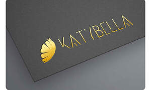

Trade Mark Journal No.2025/042 17 October 2025
UK00004273617 4 October 2025 (3,28)

- Class 3
- Cosmetics; Skincare cosmetics; Moisturisers [cosmetics]; Cosmetics and cosmetic preparations; Hair cosmetics; Skin fresheners [cosmetics]; Cosmetics for suntanning; Cosmetics for eye-lashes; Anti-aging moisturizers used as cosmetics; Organic cosmetics; Lip cosmetics; Nail cosmetics; Non-medicated cosmetics; Skin moisturizers used as cosmetics; Mousses [cosmetics]; Natural cosmetics; Cosmetics preparations; Make-up palettes containing cosmetics; Tanning gels [cosmetics]; Cosmetics in the form of lotions; Tanning oils [cosmetics]; Facial creams [cosmetics]; Colour cosmetics; Beauty care cosmetics; Self-tanning preparations [cosmetics]; Cosmetics for animals; Suncare lotions [for cosmetic use]; Eyebrow cosmetics; Tanning preparations [cosmetics]; Decorative cosmetics; Multifunctional cosmetics; Milks [cosmetics]; Eye cosmetics; Body creams [cosmetics]; After-sun oils [cosmetics]; Skin masks [cosmetics]; Tanning milks [cosmetics]; Cosmetics for eye-brows; Functional cosmetics; Facial gels [cosmetics]; Suntan oils [cosmetics]; Skin care cosmetics; Fluid creams [cosmetics]; Suntan lotion [cosmetics]; Cosmetics for children; Non-medicated cosmetics and toiletry preparations; Humectant preparations [cosmetics]; Emollient preparations [cosmetics]; Cosmetics in the form of creams; Powder compacts [cosmetics]; Sun-tanning preparations [cosmetics]; Cosmetic hair lotions; Colour cosmetics for the skin; After-sun milks [cosmetics]; Suntanning oil [cosmetics]; After-sun milk [cosmetics]; Cosmetics for use on the skin; Cosmetic moisturisers; Bath powder [cosmetics]; Sunscreens [for cosmetic use]; Cosmetic creams and lotions; Skin recovery creams [cosmetics]; Night creams [cosmetics]; Body gels [cosmetics]; Cosmetics for the use on the hair; Cosmetic products in the form of aerosols for skincare; Sun blocking lipsticks [cosmetics]; Body and facial creams [cosmetics]; Sunscreen [for cosmetic use]; Lip stains [cosmetics]; Body care cosmetics; Creams (Cosmetic -); Cosmetic creams; Sunscreen creams [for cosmetic use]; Cosmetic soaps; Cosmetics containing keratin; Cosmetics in the form of powders; Hair care lotions [for cosmetic use]; Cosmetic skin fresheners; Dyes (Cosmetic -); Cosmetic dyes; Cosmetics in the form of oils; After-sun lotions [for cosmetic use]; Cosmetics containing panthenol; Beauty lotions; Cosmetic facial lotions; Facial lotions [cosmetic]; Nail paint [cosmetics]; Cosmetic suntan lotions; Nail hardeners [cosmetics]; Colour cosmetics for children; Skin care lotions [cosmetic]; Perfume oils for the manufacture of cosmetic preparations; Tissues impregnated with cosmetics; Nail tips [cosmetics]; Anti-aging creams [for cosmetic use]; Sun protecting creams [cosmetics]; Cosmetic products for the shower; Anti-ageing creams [for cosmetic use]; Smoothing emulsions [cosmetics]; Nail primer [cosmetics]; Skin cleansers [cosmetic]; Perfumed powders [for cosmetic use]; Liners [cosmetics] for the eyes; Moisturising skin lotions [cosmetic]; Cosmetic creams for the skin; Skin creams [for cosmetic use]; Skin creams [cosmetic]; Body and facial gels [cosmetics].
- Class 28
- Toys; Toys, games, and playthings; Toys and playthings for pets; Ride-on toys; Cuddly toys; Puzzles [toys]; Toys for sandpits; Plush toys; Stuffed toys; Inflatable toys; Toys for babies; Noisemakers [toys]; Wind-up toys; Toys for pets; Fidget toys; Toys for use in perambulators; Radio-controlled toys; Plastic toys; Scooters [toys]; Crib toys; Toys for animals; Mobiles [toys]; Toys, games and playthings for pet animals; Pet toys; Windup toys; Rattles [toys]; Toys for cats; Toys for infants; Model cars [toys or playthings]; Wooden toys; Toys and playthings for pet animals; Toys for dogs; Toy dolls; Educational toys; Outdoor toys; Bendable toys; Toy playsets; Models being toys; Bath toys; Infant toys; Dog toys; Sandbox toys; Bathtub toys; Electronic toys; Action figures [toys or playthings]; Inflatable ride-on toys; Whistles [toys]; Sand toys; Controllers for toys; Soft toys; Miniature car models [toys or playthings]; Bouncing toys; Drones [toys]; Cloth toys; Musical toys; Toy figurines; Tricycles for infants [toys]; Toy furniture; Toys for birds; Mechanical toys; Play mats for use with toy vehicles [playthings]; Clockwork toys; Wheeled toys; Developmental toys; Fluffy toys; Plastic toys for use in the bath; Crib mobiles [toys]; Stuffed animals [toys]; Inflatable bath toys; Rocking toys; Stacking toys; Fabric toys; Plastic models being toys; Water toys; Modular toys; Model toys; Whack-a-mole toys for pets; Drawing toys; Play mats incorporating infant toys [playthings]; Toy prams; Action toys; Stuffed and plush toys; Stuffed plush toys; Plush stuffed toys; Battery-operated action toys; Children's toys; Sketching toys; Toy bicycles; Squeezable squeaking toys; Smart toys; Toy tableware; Plastic character toys; Whistling toys; Construction toys; Clockwork toys [of plastics]; Articles of clothing for toys; Push toys; Toy wheelbarrows; Squeeze toys; Talking toys; Toy bakeware and toy cookware; Bendy balls being toys; Toy mobiles; Toy xylophones; Toy animals; Clothing for toy figures; Stuffed bean-filled toys; Pull toys; Chewing toys for parrots; Toy cars; Toy strollers; Water-squirting toys; Toys for pet animals; Assembly toys; Toy balloons; Toy scooters; Intelligent toys; Toy hats; Music box toys; Punching toys; Toy cookware; Toy harmonicas; Toy automobiles; Smart plush toys; Toy robots; Toy tools; Toy weapons; Toys in the form of puzzles; Xylophones being musical toys; Novelty toys for parties; Toy glockenspiels; Soft sculpture toys; Inflatable pool toys; Costumes being childrens playthings; Toy bakeware; Toy balls; Money guns being toys; Toy vehicles; Toy pushchairs; Toy airplanes; Puzzle mats [toys]; Playthings.
Ecaterina Saracuta